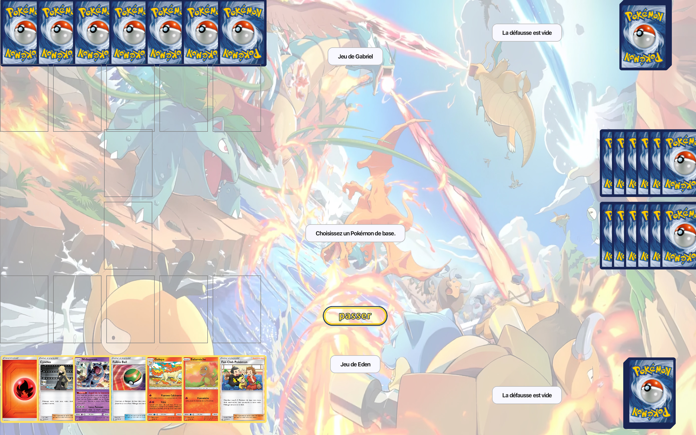
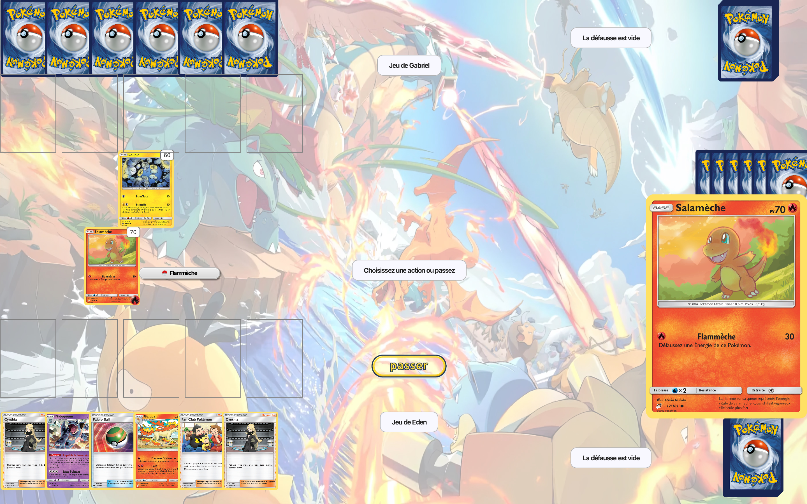

Pokémon TCG
Interface Graphique JavaFX & IHM
Contexte du projet
Dans le cadre de la SAE S2.01, ce projet constituait la phase 2 d'un module de développement. Après avoir implémenté la logique du jeu de cartes Pokémon en Java (Phase 1), l'objectif était de concevoir et réaliser une Interface Homme-Machine (IHM) complète et ergonomique en utilisant JavaFX et SceneBuilder.
Nous avions 3 semaines pour transformer un moteur de jeu textuel en une application graphique jouable et visuellement cohérente.

Vue globale du plateau de jeu au début d'une partie.
Chronologie & Développement
Planification & Organisation
Semaine 1Réflexion sur l'architecture MVC et l'agencement des fichiers FXML. Gestion des premiers conflits Git et mise en place des bonnes pratiques de versionnement.
Implémentation Core IHM
Semaine 2- Création des vues principales (Plateau, Main, Défausse).
- Liaison des données JavaFX (Bindings) pour les updates en temps réel.
- Intégration des images des cartes.
Polish & Interactions Avancées
Semaine 3- Développement du système de zoom au survol.
- Gestion des Events Listeners pour les énergies et PV.
- Sprint final en présentiel pour résoudre les bugs d'intégration.
Contribution Individuelle
En tant que binôme actif, j'ai pris la responsabilité de plusieurs modules critiques de l'expérience utilisateur :
Interactions UX
- Zoom Dynamique : Implémentation de l'agrandissement des cartes au survol de la souris pour permettre la lecture des descriptions.
- Feedback Visuel : Système de mise à jour instantanée des PV et des Énergies
attachées via des
EventListeners.
Visuels & Assets
- Gestion des Images : Intégration et redimensionnement dynamique des assets graphiques.
- Layout FXML : Design de la vue du joueur et de la zone de jeu active.
Collaboration
- Workflow Git : Résolution des conflits de fusion sur les fichiers FXML.
- Communication : Feedback régulier et sessions de pair-programming pour déboguer.

Détail d'une carte Salamèche avec affichage dynamique des énergies et zoom au survol.
Compétences Acquises
Ce projet m'a permis de comprendre l'importance d'une séparation stricte entre la logique métier et la vue (MVC), ainsi que la puissance du mécanisme d'événements de JavaFX pour créer des interfaces réactives.
- Maîtrise de l'architecture MVC avec JavaFX.
- Utilisation avancée de Git en équipe (branches, merge requests).
- Design d'interface responsive et gestion des conteneurs (StackPane, HBox, etc.).
- Collaboration efficace et répartition des tâches techniques.